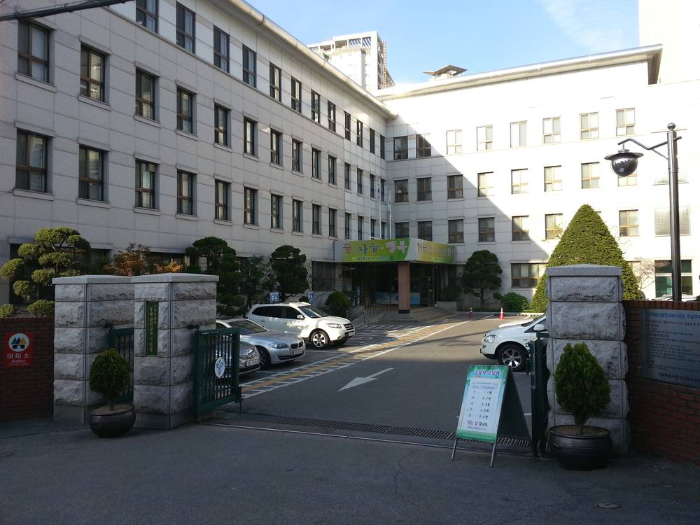

서울 학교 3곳 지붕 시민햇빛발전협동조합 태양광, 사용료 1,470만 원 밀려…학교마다 대응 제각각

서울시의회 행정사무감사서 지적…인헌고는 사용허가 취소, 상원초는 독촉 공문만 11차례, 협동조합형 20개교·민간형 12개교 안전점검 요구
서울의 한 시민 햇빛발전협동조합이 학교 지붕에 설치해 운영하는 태양광 발전소 3곳의 사용료가 1,470만 원가량 밀린 것으로 확인됐다. 서울시교육청이 시의회에 낸 자료를 보면 서울시민햇빛발전협동조합이 운영하는 상원초·인헌고·중화고의 사용료 미납액은 올해 9월 기준 약 1,470만 원이다. 이희원 서울시의회 교육위원회 부위원장은 11일 교육청 행정사무감사에서 이 조합이 2022회계연도 경영공시에 자본 약 2억7,400만 원, 당기순손실 약 5억 원을 올리는 등 경영이 나빠진 신호가 있었는데도 상원초 사용허가가 갱신됐다며, 교육청이 사업자의 재무 상태와 납부 능력을 확인했는지 따졌다. 체납 뒤 대응도 학교마다 달라 인헌고는 지난해 2월 사용허가를 취소했고 중화고는 취소 사전 절차에 들어갔지만, 상원초는 올해 10월까지 독촉 공문만 11차례 보냈다. 이 부위원장은 교육청이 학교에만 맡기지 말고 회수 대책을 함께 세우는 한편, 협동조합형 태양광이 있는 20개교와 민간사업자형 12개교의 안전 점검, 사용허가 때 사업자 재무 심사 강화를 요구했다.
시민에너지 관점
학교 지붕 태양광은 영국의 학교 에너지 협동조합처럼 주민과 학부모가 출자해 학교와 지역에 이익을 돌리는 대표적인 시민에너지 모델이고, 서울에서도 협동조합형만 20개교에 이른다. 사용료 1,470만 원 체납은 협동조합 모델이 틀려서라기보다, 낮은 전력 판매 단가와 작은 조합의 경영 부담을 학교별 개별 계약에만 맡겨 둔 관리 체계의 빈틈을 드러낸 것이다. 허가를 학교마다 따로 취소하면 시민 출자금과 멀쩡한 발전 설비가 함께 묶여 버리는 만큼, 교육청이 조합과 마주 앉아 미납 정산과 설비 승계 방안을 함께 찾는 편이 학생과 시민 모두에게 낫다. 교육청은 일괄 점검과 함께, 경영이 어려운 조합의 설비를 다른 시민 조합이나 공공이 이어받는 승계 규정을 사용허가 조건에 넣어야 한다.
출처: 뉴스핌 2026-11-12 정태선 원문 보기
ソウルの学校3校の屋根で市民太陽光協同組合が運営する発電所、使用料1,470万ウォン滞納…学校ごとに対応ばらばら
ソウル市議会の行政監査で指摘…仁憲高は使用許可を取り消し、上院小は督促文書を11回送っただけ、協同組合型20校・民間型12校の安全点検を要求
ソウルの市民太陽光発電協同組合が学校の屋上に設置・運営する太陽光発電所3カ所の使用料が、約1,470万ウォン滞納されていることが分かった。ソウル市教育庁が市議会に提出した資料によると、ソウル市民太陽光発電協同組合（서울시민햇빛발전협동조합）が運営する上院小学校・仁憲高校・中和高校の使用料の未納額は、今年9月時点で約1,470万ウォンに上る。ソウル市議会教育委員会のイ・ヒウォン副委員長は11日の教育庁に対する行政監査で、同組合が2022会計年度の経営公示で資本約2億7,400万ウォン、当期純損失約5億ウォンを計上するなど経営悪化の兆候があったにもかかわらず上院小の使用許可が更新されたと指摘し、教育庁が事業者の財務状態や納付能力を確認したのかをただした。滞納後の対応も学校ごとに異なり、仁憲高は昨年2月に使用許可を取り消し、中和高は取り消しの事前手続きに入ったが、上院小は今年10月までに督促文書を11回送っただけだった。イ副委員長は、学校任せにせず教育庁が回収策を立てるとともに、協同組合型太陽光がある20校と民間事業者型の12校の安全点検、使用許可時の事業者の財務審査の強化を求めた。
市民エネルギーの視点
学校の屋根の太陽光は、英国の学校エネルギー協同組合のように住民や保護者が出資して学校と地域に利益を還元する代表的な市民エネルギーのモデルであり、ソウルでも協同組合型だけで20校に上る。使用料1,470万ウォンの滞納は協同組合モデルが間違っているからというより、低い売電単価と小さな組合の経営負担を学校ごとの個別契約に任せきりにしてきた管理体制の隙を示している。学校ごとに許可を取り消せば市民の出資金とまだ使える発電設備が一緒に塩漬けになるため、教育庁が組合と向き合い、未納の精算と設備の承継策を共に探るほうが生徒と市民の双方にとって良い。教育庁は一括点検とあわせ、経営難の組合の設備を他の市民組合や公共が引き継ぐ承継規定を使用許可の条件に盛り込むべきだ。
出典: 뉴스핌 2026-11-12 정태선 原文を読む
首尔3所学校屋顶上的市民太阳能合作社电站拖欠使用费1,470万韩元…各校应对不一
首尔市议会行政监察指出：仁宪高中已撤销使用许可，上院小学仅发出11次催缴公函；要求对20所合作社型、12所民营型学校设施进行安全检查
首尔一家市民太阳能发电合作社在学校屋顶建设并运营的3座太阳能电站，被确认拖欠使用费约1,470万韩元。根据首尔市教育厅提交给市议会的资料，首尔市民阳光发电合作社（서울시민햇빛발전협동조합）运营的上院小学、仁宪高中和中和高中的使用费欠缴额截至今年9月约为1,470万韩元。首尔市议会教育委员会副委员长李熙媛11日在对教育厅的行政监察中指出，该合作社在2022会计年度经营公示中显示资本约2亿7,400万韩元、当期净亏损约5亿韩元，已出现经营恶化迹象，但上院小学的使用许可仍获续期，并质问教育厅是否核查了经营者的财务状况和缴费能力。欠费后的应对也因校而异：仁宪高中去年2月撤销了使用许可，中和高中已启动撤销前置程序，而上院小学到今年10月为止只发出了11次催缴公函。李副委员长要求教育厅不要把问题丢给各校，而应统一制定追缴对策，并对设有合作社型太阳能设施的20所学校和民营型的12所学校进行安全检查，同时在审批使用许可时加强对经营者的财务审查。
市民能源视角
学校屋顶太阳能就像英国的学校能源合作社那样，由居民和家长出资、把收益回馈学校和社区，是具有代表性的市民能源模式，仅首尔的合作社型就已覆盖20所学校。拖欠1,470万韩元使用费，与其说是合作社模式本身有问题，不如说暴露了管理体系的漏洞——把低售电价格和小型合作社的经营压力全部交给各校的单独合同去承担。如果各校分别撤销许可，市民的出资和仍可使用的发电设备将一并被搁置，因此教育厅与合作社坐下来共同商讨欠费清算和设备承接方案，对学生和市民都更有利。教育厅在统一检查的同时，应把经营困难合作社的设备由其他市民合作社或公共部门承接的规定写入使用许可条件。
来源: 뉴스핌 2026-11-12 정태선 查看原文
Citizen Solar Co-op Owes 14.7 Million Won in Rent for Rooftop Plants at Three Seoul Schools, and Each School Is Handling It Differently
Seoul council audit flags the arrears: one high school revoked its permit, an elementary school sent 11 reminder notices; councillor calls for safety checks at 20 co-op and 12 private school installations
A citizen solar cooperative that runs rooftop solar plants at three Seoul schools has fallen about 14.7 million won behind on the fees it pays to use the roofs. According to data the Seoul Metropolitan Office of Education submitted to the city council, unpaid fees at Sangwon Elementary, Inheon High and Junghwa High, all operated by the Seoul Citizens' Solar Cooperative, stood at about 14.7 million won as of September. At the council's audit of the education office on the 11th, Lee Hee-won, vice chair of the council's education committee, noted that the cooperative's 2022 financial disclosure showed capital of about 274 million won and a net loss of about 500 million won, yet Sangwon Elementary still renewed its permit, and asked whether the office had checked the operator's finances and ability to pay. Responses have varied by school: Inheon High revoked its permit in February last year and Junghwa High has begun the revocation process, while Sangwon Elementary has only sent 11 reminder notices through October. Lee urged the office to draw up a collection plan instead of leaving it to individual schools, to carry out safety checks at the 20 schools with cooperative-run solar and 12 with privately run systems, and to tighten financial screening of operators when issuing permits.
Citizen Energy View
School rooftop solar, like the UK's schools' energy cooperatives, is a classic citizen energy model in which residents and parents invest and return the benefits to schools and the community, and in Seoul cooperative-run systems alone cover 20 schools. The 14.7 million won in arrears exposes less a flaw in the cooperative model than a gap in oversight that has left low power prices and the financial strain on small cooperatives to school-by-school contracts. Revoking permits one school at a time would tie up both citizens' investments and working generation equipment, so it would serve students and citizens better for the education office to sit down with the cooperative and work out settlement of the arrears and a transfer of the assets. Along with a system-wide inspection, the office should write into permit conditions a succession rule under which another citizen cooperative or a public body can take over the equipment of a struggling cooperative.
Source: 뉴스핌 2026-11-12 정태선 Read the original